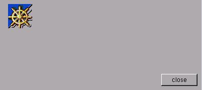

SYNTAX
The XSTEP pixmap support enable you to use pixmaps in XPM format. Only 'type 1' pixmaps are supported, in a more correct language, you must reduce the number of pixmap colors.
EXAMPLES#include "mozilla.xpm"Load to X server pixmap and link to any XSTEP widget. Pixmaps can work with buttons, others widgets requires extra code to draw the pixmap....
struct xtree *t;
...
mkpixmap(mozilla,t);
In this small example, a window will be created with a box, a pixmap is created in the X server and linked to box widget. The callback function draw() copy the pixmap to the box in expose events.#include <xstep.h> #include "mozilla.xpm" void draw(struct xtree *treeptr) { XCopyArea(display,treeptr->pix,treeptr->win,treeptr->gc,0,0, treeptr->wpix,treeptr->hpix, (treeptr->aw-treeptr->wpix)/2,(treeptr->ah-treeptr->hpix-14)/2); } void xmain(int n,char *p[]) { struct xtree *t; window_create(0,0,400,180,"box_create_xpm"); t=box_create(8,8,64,64,draw,gray); mkpixmap(mozilla,t); button_create(-8,-8,72,24,"close",window_close); }#include <xstep.h>
#include "mozilla.xpm"void xmain(int n,char *p[]) {
struct xtree *t;
window_create(0,0,400,180,"button_create");
t=button_create( -8,-8,72,72,"close",window_close);
mkpixmap(mozilla,t);
}
In this example, the pixmap is created in the X server and linked to a button widget, but isn't necessary any draw function (this is the only special case, all others widgets can't detect any pixmap, you must draw the pixmap in expose events).